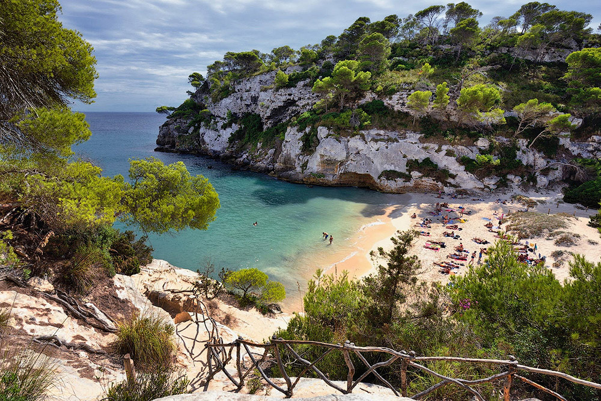
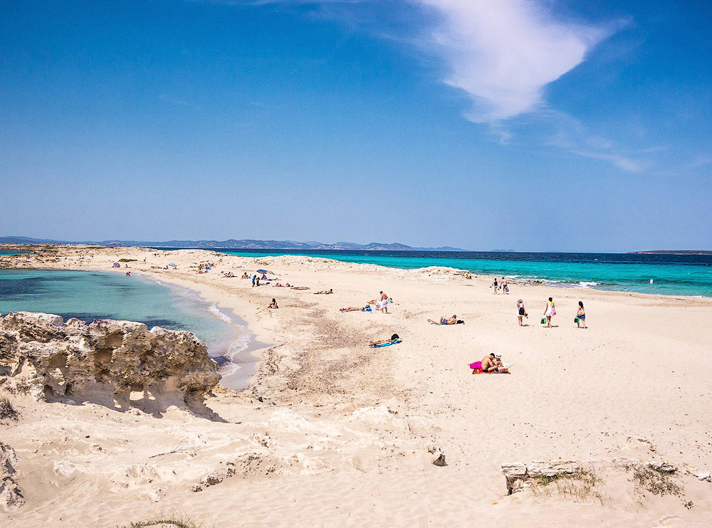
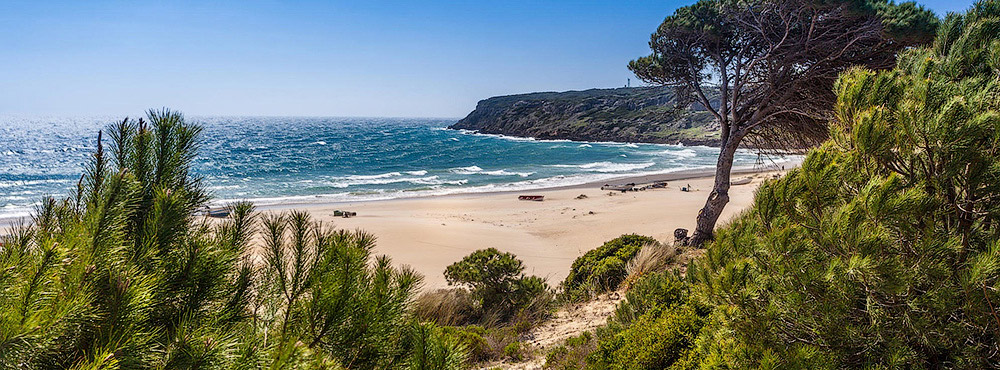
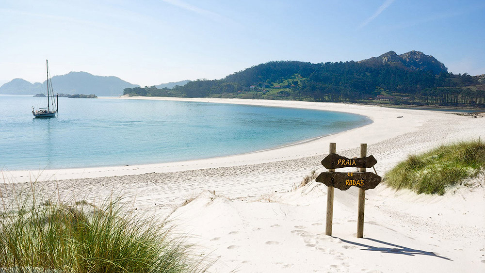
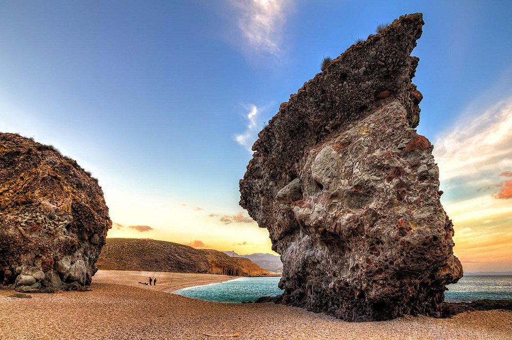
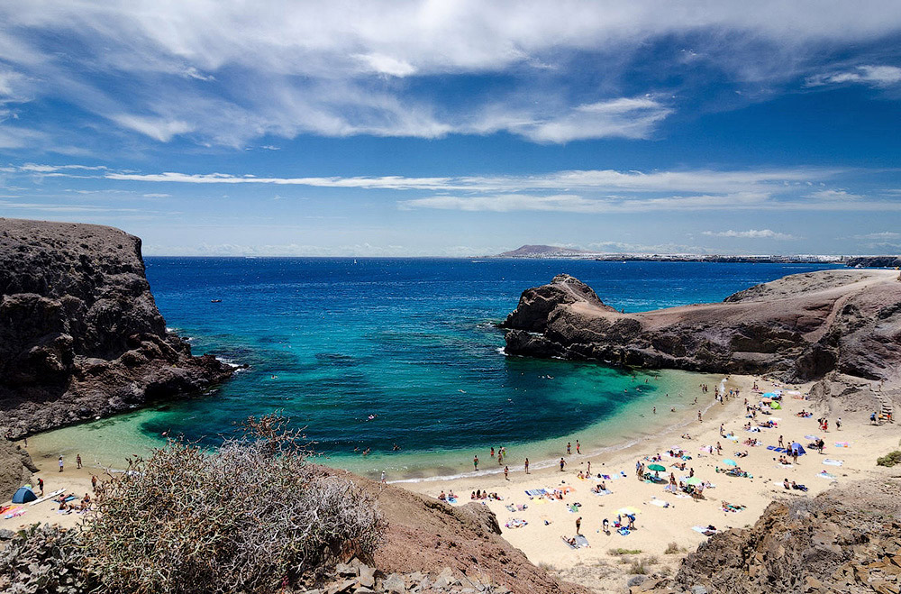
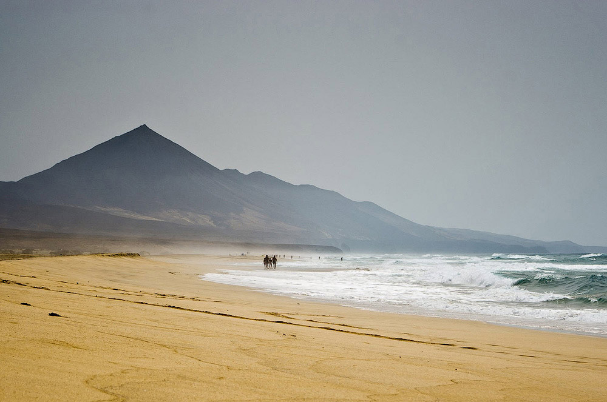
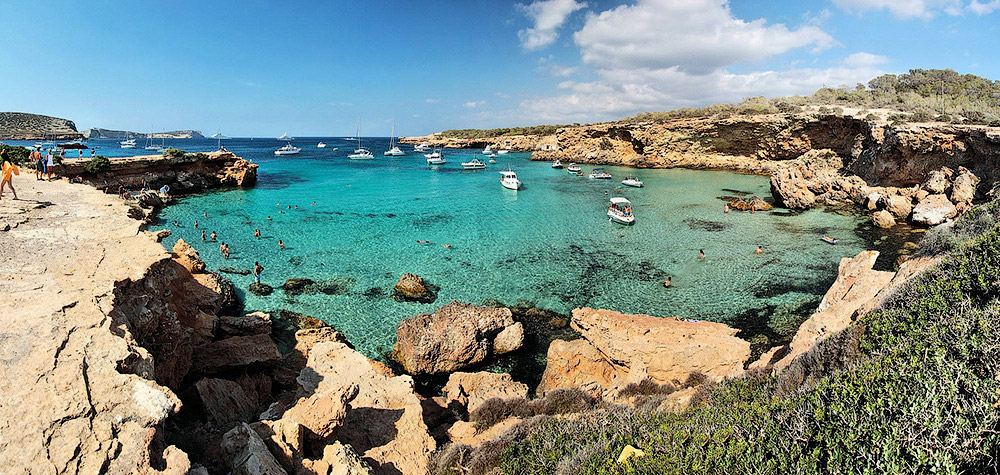

Поездку в Испанию почти невозможно представить себе без пляжного отдыха. Какой бы не была цель путешествия, все и всегда норовят хотя бы часик понежиться на песочке, подставив лицо игривым солнечным лучам и искупаться на одном из многочисленных испанских пляжей, общая протяженность которых, кстати, составляет более 7900 км! Сегодня мы подготовили для Вас Топ-10 самых красивейших, живописных и рекомендуемых для посещения пляжей Испании, которые не оставят равнодушным даже самого изощрённого путешественника.
Открывает наш рейтинг пляж Кала Макареллета (Cala Macarelleta) на острове Менорка, Балеарского архипелага. Это излюбленное место романтиков и фото художников. Кристально-чистая, бирюзовая вода, тёплый, почти белый песок, буйная растительность и скалы вокруг делают это место одним из самых красивых на острове.
На следующей позиции опять Балеарские острова, теперь это остров Форментера и его красивейший пляж Сес Ильетас (Playa de Ses Illetes). В противовес своему предшественнику и соседу на Менорке, этот пляж не является живописной бухтой, а, наоборот, представляет собой длинную, 450 метровую косу с дюнами из мелкого белого песка. Здесь чистейшая вода и прекрасные условия для изучения подводного мира.
Пляж Болония (Playa de Bolonia), расположенный в провинции Кадис, что в солнечной Андалусии. Это один из немногих девственных пляжей южной провинции, протяженностью 3800 метров и шириной порядка 70 метров. Километры белого песка, прозрачная вода, редкие кафе-чирингито и величественные песчаные дюны делают этот пляж жемчужиной побережья Кадиса.
Для посещения следующего пляжа нашего рейтинга необходимо отправиться на север страны. Здесь, на галисийском острове Сиес, находится один из красивейших пляжей Испании, не раз входивший и в международные рейтинги - Пляж Родос (Playa de Rodas). Это настоящий природный оазис, который местные жители называют раем на земле. Воды Атлантического океана напоминают Карибы, а песок настолько белый, что ослепляет, отражаясь на солнце. Особую живописность этому месту придают пихты и эвкалиптовые деревья, обрамляющие пляж.
Следующий пляж с далеко не романтическим названием Лос Муэртос (Playa de los Muertos), что переводится, как «пляж мёртвых», находится в провинции Альмерия, на территории природного парка Cabo de Gata. Такое не лестное название было присвоено пляжу ещё предками, так как именно сюда течением часто прибивало тела моряков, погибших во время штормов и кораблекрушений. Сегодня же Playa de los Muertos считается одним из самых красивых пляжей Испании, а многочисленных туристов, прибывающих понежится на тёплом песочке и насладится природными красотами, совершенно не смущает его название.
Пляж Папагайо (Playa del Papagayo) на острове Лансароте, Канарского архипелага. Это живописнейшая бухта, с бирюзовой, почти прозрачной водой и пляжем из мелкого белого песка. Несмотря на то, что Канарские острова находятся в Атлантическом океане, на котором редко бывает штиль, в этой бухте ощущаешь себя будто бы в бассейне натурального происхождения, настолько спокойна здесь вода.
Пляж Кофете (Playa de Cofete) на острове Фуэртевентуре Канарского архипелага выходит за рамки привычной нам красоты бирюзовых вод и буйной растительности вокруг. Это настоящий микс стихий, здесь океан сливается с небом, волны встают на дыбы, а ветер буквально сбивает с ног. Но это стоит увидеть! Первозданная красота, 14 км нетронутой человеком природы. Это один из самых прекрасных диких пляжей Испании.
Следующий пляж - это ещё один кусочек рая на земле. Кала Комте (Cala Comte) на острове Ибица. Этот пляж полностью оправдывает представление тусовщиков и романтиков об Ибице. Находясь на Кала Комте, хочется остановить время. Здесь прекрасно всё: цвет воды, переливающийся от насыщенного синего до нежно голубого, мягкость мелкого песка, окружающая пляж природа и даже солнце освещает этот пляж как-то особенно нежно, боясь спугнуть жгучими лучами. Но, как и у многих подобных мест, у пляжа есть один недостаток – чрезмерная популярность, в летний период, после 11 утра здесь сложно найти место, чтобы прилечь.